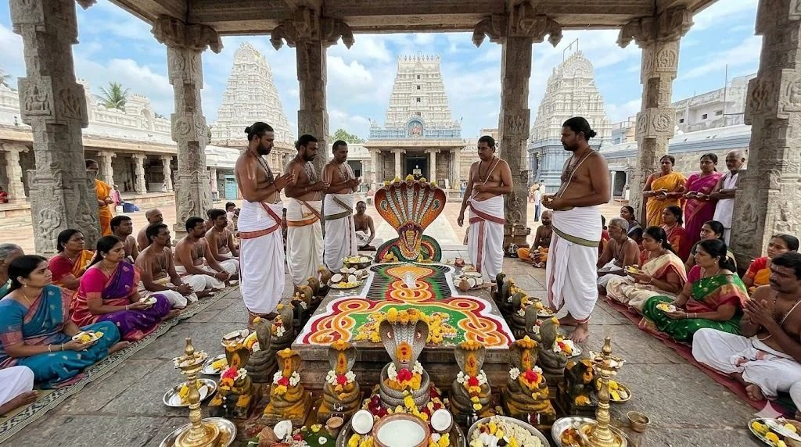

ॐ
Authenticity
Rituals performed strictly as per Vedic tradition.

Shubh Pooja
About Shubh Pooja
We connect families with learned priests so every ritual is performed with devotion and ease.
Our Story
Shubh Pooja began in 2018 when our founder struggled to find a reliable priest for a family ceremony. Today we serve devotees across South India with verified priests and transparent pricing.
We combine Vedic authenticity with simple booking so you can focus on the ritual.
Our Values
Rituals performed strictly as per Vedic tradition.
Every priest verified for training and conduct.
Clear pricing with no hidden charges.
Our Team


Trust & Safety
Identity, training and conduct are checked before any priest joins.
Priests reach your home early so the muhurat is never missed.
See the full price before you confirm, with no surprise charges.
Change your date up to 48 hours before the ritual at no cost.

Milestones
Eight years of serving devotees, one ritual at a time.
Karthik started Shubh Pooja with 12 priests from his neighbourhood temple and served 200 families in the first year.

We opened in Bengaluru and Hyderabad and welcomed Telugu and Kannada speaking priests to the family.

Complete ritual kits now reach doorsteps on the morning of the ceremony, packed item by item.

The devotee dashboard went live, bringing booking, samagri lists and payments into one place.

Where We Serve
Verified priests are available in these cities, with more joining every month.